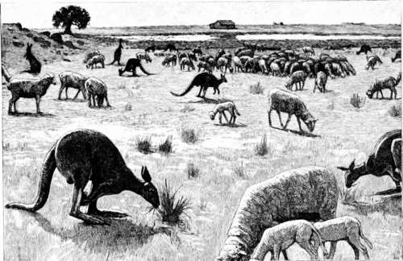

A Kangaroo Hunt. Part 3
Description
This section is from the book "Hunting", by Archibald Rogers. Also available from Amazon: Hunting.
A Kangaroo Hunt. Part 3
10 cartridges; and of these we expected to make good use. A pleasant drive of thirty miles over the yellow plains, dotted here and there with graceful shioke and contorted honeysuckle trees, landed us at the "selection" of one Allan Wilkinson, who was to be our host and guide. He was a long-haired, gentle-eyed native of fifty, who had been born and bred upon the mountain, and was gifted with the far sight and the slow, drawling speech of a typical Western trapper of the old days. Here we took horses and rode six miles farther into the mountains, drawing up eventually at a rough saw-mill which was owned by our gentle-mannered host. We made this our headquarters; and for several days we clambered about the hills under Wilkinson's guidance, at times losing ourselves for hours in the cloud-banks which hung perpetually about the mountain's flank, or anon attaining some lofty summit and peering through the gray vistas of eucalyptus, and out over the sunny plains to golden Ballarat or pastoral Evoca. But of game we saw none, not even the shake of a bunny's tail. The cockatoos, the wallaby, and the mountain goats seemed all to have deserted these usual feeding-grounds; and after three days of the most energetic hunting, our bag contained only one little pair of the scarlet parrots known as lowries. At the end of that time the rain came down in torrents —came down as it knows how to do upon occasion during the Australian winter; and we were glad of the excuse to beat a retreat to Wilkinson's hospitable homestead in the foot-hills, where we found the uproar of a growing family of lusty young Victorians rather a relief after the strange and solemn stillness of the hills. But still more grateful to us was the news we received from one of the boys, to the effect that he had that afternoon seen a fine troop of kangaroos feeding quietly in a certain clearing about two miles distant from the house. His imagination had been particularly impressed by the monster proportions of a certain immense "old man" who led the herd. This incident was freely discussed over our typical Australian supper of mutton-pie and delicious tea, and R. and I resolved to have a try at the herd in question the next day. In the morning we found the storm raging as wildly as ever, and Wilkinson's kindly eyes twinkled with pleasure as he looked out upon the drenched landscape.
"My word," he exclaimed, "we are in luck. This is grand kangaroo weather."
The kangaroo is a late feeder, so we deferred our start until about four o'clock in the afternoon. The wind was still roaring loudly in the tall gum-trees, and the rain poured in streams down our glistening oil-skins when we set out. Thanks to the inclemency of the weather, we were not obliged to exercise any great caution in approaching the feeding-ground, and the dull light minimized the chances of our being seen. The only real danger lay in the possibility of the game getting wind of us; for no animal has a keener scent than the kangaroo, and to none is the odor of man more antipathetic. We found that the spot indicated by young Wilkinson was a "selector's" clearing in the forest, a bit of fairly level ground half a mile or so in width, which lay at the bottom of a small valley between two low spurs of the foot-hills. Covered with rich grass, and surrounded as it was on all sides by the primeval forest, it was the likeliest place in the world for kangaroo; and, as we approached, Wilkinson assured us that we could count with certainty upon their returning frequently to so favorable a feeding-ground. We were rather disappointed, therefore, when, upon reaching the edge of the clearing, and peering through the fringe of leaves, we could discover no living object save a few horses grazing peacefully near its centre. We were about to break cover, when my attention was attracted by a few black spots upon the farther edge of the meadow. These I pointed out to Wilkinson.
The Plains in 1840
"Kangaroo, sure enough," was his whispered reply; and upon looking closely, both R. and I could see the queer, elongated objects moving about from time to time as they grazed quietly.
There were a good many of them — five —seven—nine—perhaps twelve, of sizes so varying as to suggest the idea that they must all be members of one large and growing family. Fortunately for us the wind was blowing across the clearing from north to south, while the kangaroos were grazing upon its far eastern edge, and we ourselves were placed at its extreme western extremity. We were much too far off for a safe shot, and it would be necessary, therefore, first to make a long detour through the forest so as to approach them from behind, and then to do a piece of very careful stalking; for the slope of the mountain opposite, close to which the kangaroos were feeding, was very sparsely wooded, and any moving object upon its surface would be very likely to attract the attention of the watchful sentinel of the herd. Now, I have already observed that, under ordinary circumstances, it is nearly impossible to successfully stalk a herd of feeding kangaroos. First, of course, because of the vigilant "old man" who is always on guard; second, and more important, on account of a strange bird, called the kan-garoo-warner, which is always to be found in the neighborhood of a feeding herd, ever ready to give instant warning of the approach of any suspicious-looking intruder. I was never able to obtain a satisfactory explanation of this peculiar habit of the Australian jay,—for such it is, —and the question seems to be still a moot one among Australian ornithologists; but I was informed that in former times a kangaroo-warner was never seen save in the company of its favorite marsupial. It is, of course, just possible that this belief might be traced to a certain natural desire for poetic symmetry upon the part of the native mind. If this is not the case, then one is inevitably led to the conclusion that the kanga-roo-warner must be sadly in want of an occupation at the present day. In any case he is a queer bird; and another of his peculiarities is the fact that his spirits seem to be very much affected by a low barometrical pressure, for he is invariably silent in the rain. So in this particular we were again singularly favored by the stormy weather.
Continue to: